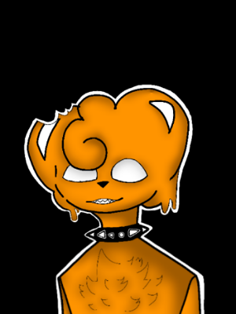

AtroHappy é um urso laranja de estatura imponente, com pelagem macia e brilhante. Sua expressão facial é amigável e acolhedora, com olhos um pouco grande e curiosos que transmitem alegria e bondade. Suas mãos são normais, com garras afiadas que contrastam com sua doçura. AtroHappy possui características distintas, sendo metade urso e metade humano, o que o torna um ser intrigante e diferente dos demais de sua espécie. Sua presença é marcante e sua personalidade única o faz se destacar onde quer que vá.
Voltar